& Web Designer • Illustrator
Break the Stigma
Services
Brand Identity, Environmental Design,
Experience Design, UX/UI Design
Role
Researcher, Project Manager,
Director of Digital, Illustrator
Collaborators
Aliya Griffin, Olivia Kriley, Roman Reed,
Sophia Toto, Sam VandenHeuvel,
Maggie
Zeng
Overview
Break the Stigma is a comprehensive harm reduction educational campaign combining physical and digital touchpoints to reduce stigma and raise awareness among students and the general public. Funded through a Smart and Healthy Cities grant, the project featured a pop-up booth with environmental signage, interactive components, and branded merchandise, alongside a coordinated social media campaign, educational website, and digital game—creating a cohesive experience that meets people where they are with compassion and practical tools.
Challenge
How do you make a topic as stigmatized as substance use and harm reduction approachable and engaging for a general audience? With nearly 110,000 people dying from drug overdose annually and 75% of people still not recognizing substance use disorders as chronic illnesses, the challenge was to create an educational experience that breaks down barriers, invites conversation rather than judgment, and provides practical resources—both in person and online—that empower people to take action and save lives.
Research and Analysis
The research phase involved investigation across multiple methodologies to understand harm reduction from both academic and community perspectives. The team conducted literature reviews of harm reduction frameworks and stigma studies, visited a community organization to observe practices and assemble safe use kits, and interviewed advocates and people with lived experience. This multi-faceted research approach revealed critical gaps in harm reduction awareness and education that shaped the design strategy.
Understanding Harm Reduction
Harm reduction encompasses interventions that make inherently unsafe or risky activities slightly safer and healthier. The foundational principles include accepting that drug use is part of our world, meeting users where they are without judgment, providing non-coercive services, empowering community voices, and recognizing how social inequities affect vulnerability to drug-related harm.
The Stigma Problem
More than 75% of people do not consider Substance Use Disorders (SUD) to be a chronic illness like diabetes or heart disease. This stigma has real consequences: in 2022, 54.6 million people needed substance use treatment, but only 13.1 million received it. Healthcare professionals themselves sometimes refuse to prescribe medications for opioid use disorder (MOUD), despite it being an effective treatment.
Education Gaps
A study of 568 students from 52 medical schools revealed alarming gaps in harm reduction education. Only 29.5% of medical students reported training on prescribing MOUD—the first-line treatment proven to decrease mortality risk—and only 56.6% received training on administering naloxone.
Field Insights
Through our visit to The Everywhere Project, a Philly based Harm Reduction Organization, we gained crucial insights that shaped our design approach. We learned that 80% of overdoses occur in the home and clean supplies increase the likelihood of seeking treatment by 4 times, highlighting the need for accessible education and resources in everyday spaces. Positive, approachable materials combat stigma far more effectively than intimidating ones.
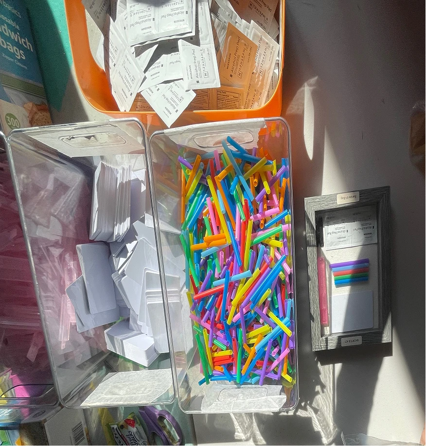
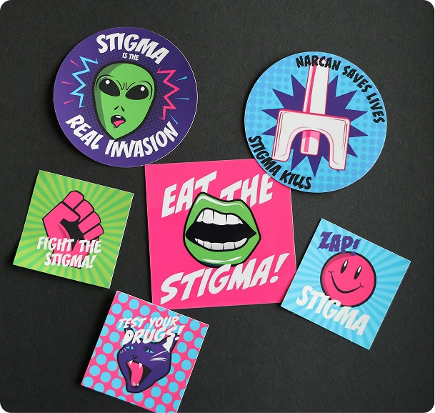
Real People, Real Stories
To ground our project in authentic experiences, we interviewed people with lived experience in substance use and recovery. Their voices shaped our understanding of harm reduction, challenged stigma, and deepened our empathy. The insights we gained directly informed the design decisions, messaging, and educational content throughout the campaign.
Precedent Analysis
We studied successful campaigns like "Let's Stop HIV Together" (multi-platform stigma reduction), "Truth Initiative" (youth-focused tobacco prevention using humor), and "Real Stories/Rx Awareness" (humanizing the opioid crisis through personal narratives). These showed us that humanizing the issue, meeting people where they are, and using approachable design were more effective than fear-based approaches like the DARE campaign's "Just Say No" messaging.
Stakeholder Analysis
We mapped the complex network of stakeholders to understand how information flows through the community and identify opportunities for intervention.
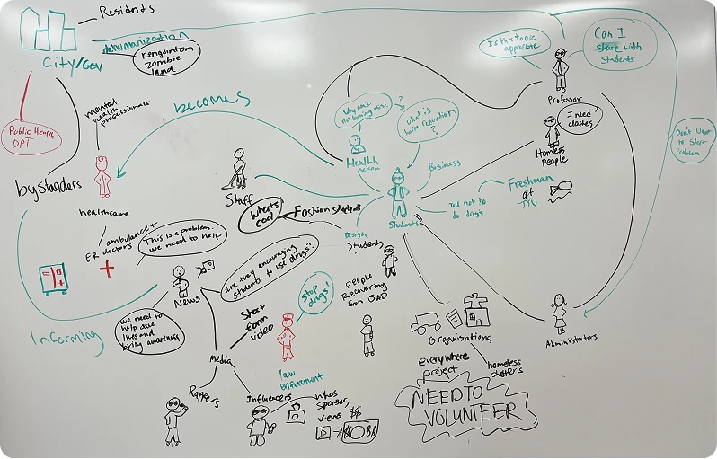
Design Implications
These findings informed our approach to create an educational experience that reduces stigma through welcoming design, meets people where they are with accessible information, fills education gaps with practical resources, and uses real stories to humanize the issue beyond statistics.
User Personas and Journey Mapping
To understand our diverse student audience, we developed three personas representing a spectrum of perspectives on substance use and harm reduction— from supportive advocates to skeptical opponents. Each persona helped us identify specific design opportunities throughout the user journey.
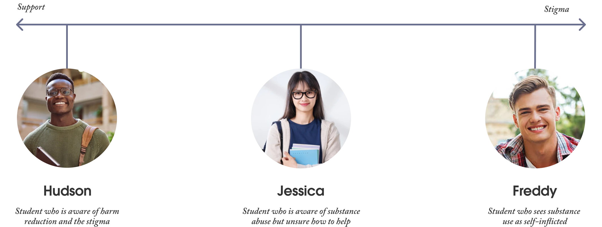
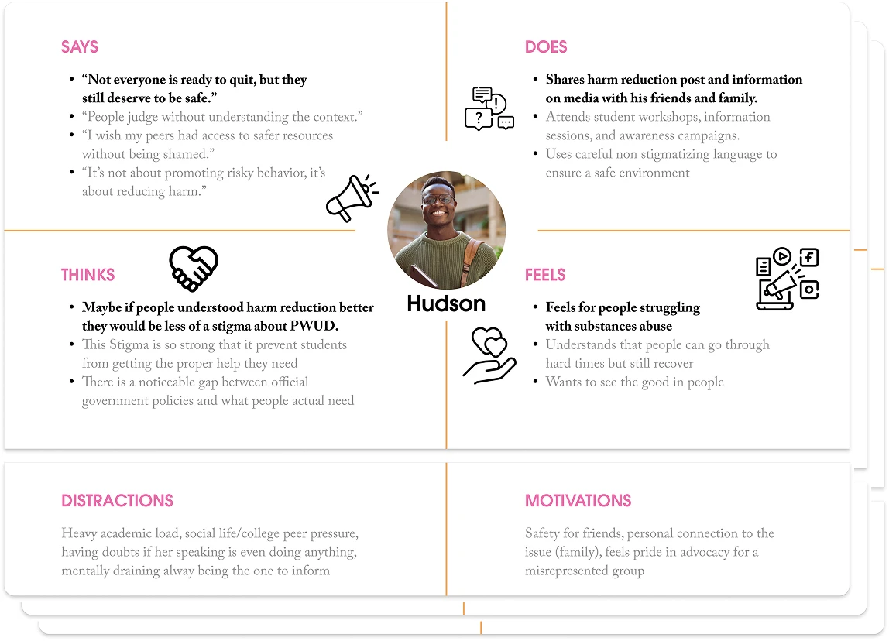
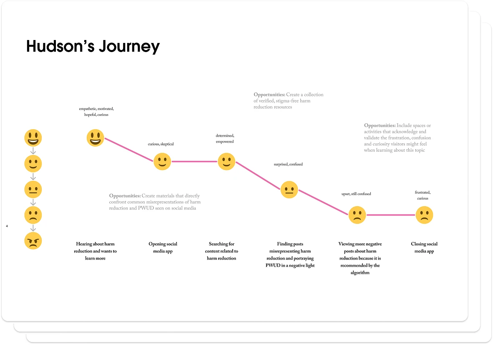
Ideation and Concept Development
The ideation process began with collaborative brainstorming sessions, where the design team mapped out key concepts and shaped the interactive elements through whiteboard sessions. Rapid prototyping with simple materials like cardboard and newspaper was used to experiment with booth layouts, digital game mechanics, and visitor engagement pathways. This hands-on approach allowed the team to iterate quickly on spatial design and interactive elements before committing to final production.
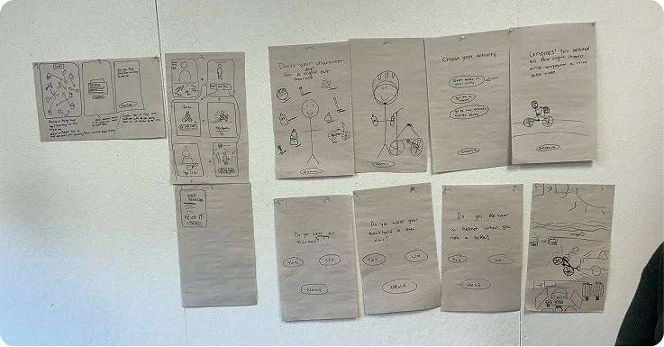
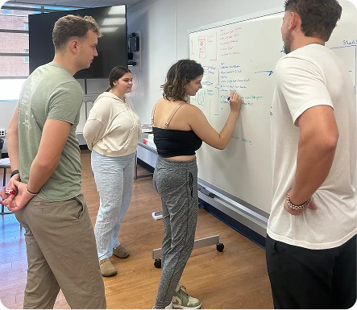
Low-Fidelity Prototyping
Using insights from research and ideation, the design team created an information architecture that outlines the website’s structure and organization. The team developed low-fidelity wireframes as a blueprint for the website layout and functionality, ensuring a logical hierarchy and intuitive user interface. They also digitally mapped out the booth's navigation and content organization, and sketched screens and user flows for the digital interactive game on whiteboards.
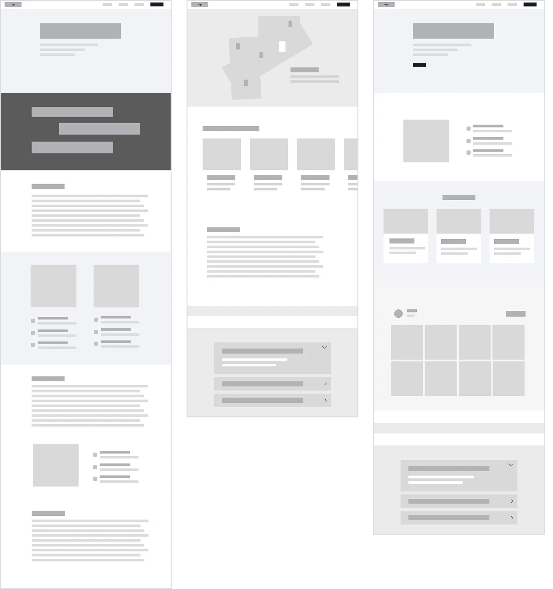
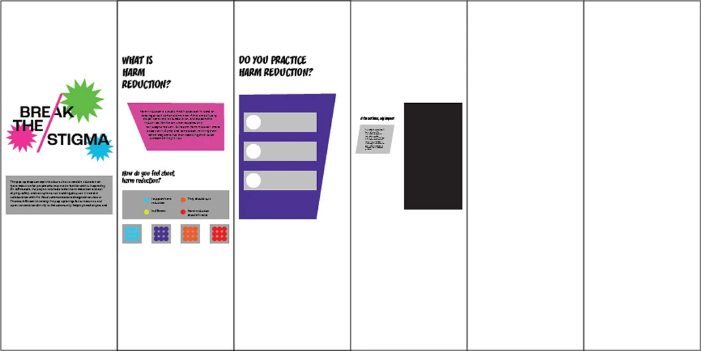
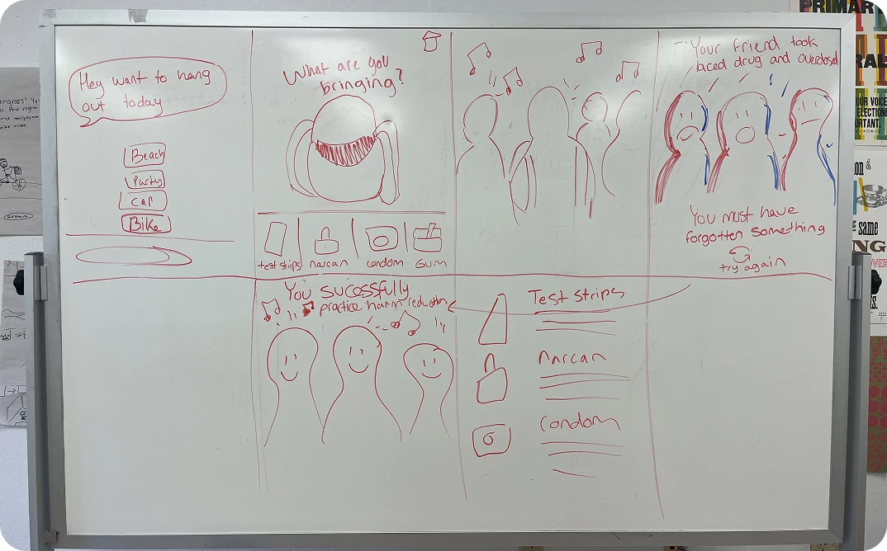
Visual Identity
The visual identity for the Harm Reduction Pop-up Educational Exhibit centers around the concept of "Break the Stigma"—both as a message and a visual metaphor. The branding draws inspiration from pop art, using bright colors and halftone textures while taking an advocacy approach to the issue. Much like the original Pop Art movement challenged traditional art and culture, this branding aims to challenge and educate people about perceptions of harm reduction.
Logo System
The primary logo physically embodies the concept by using the slant of the "A" letterform to literally break through the wordmark in bright pink from the color palette. Secondary logos include a single-color wordmark for full bleed backgrounds and a version for booth signage that incorporates additional graphic elements.
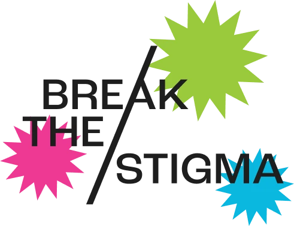
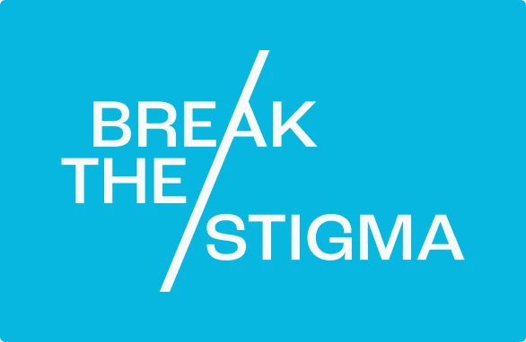
Color Palette
The color palette features saturated, bold, and high-contrast colors that grab attention and reflect the energy of activism. This pop punk art direction helps the booth stand out and reinforces the message that harm reduction deserves visibility.
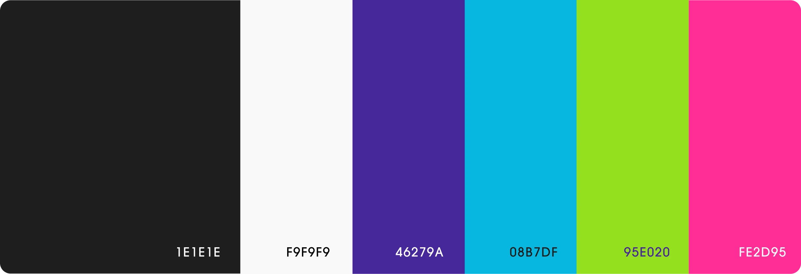
Typography
Typography pairs Roc Grotesk (medium for headlines, bold for subheadings) with Mundial Narrow Light for body copy. Specialty fonts matching the pop punk direction are used strategically to capture attention.
Illustration System
The primary illustrations follow a pop-punk style and include several key visual elements. The lips were inspired by original mood boards focused on activism and awareness, serving as the foundation for the system. The cat symbolizes resilience and willingness to push back against stigma. The alien represents how people who use drugs are often treated as outsiders. Halftones and playful shapes reference classic pop art, adding energy and engagement to the overall design.


Photography
Black-and-white halftone photography, inspired by the fashion-merch mood board, appears across the digital game, social media, merchandise, and information cards. This photographic treatment provides a clean, grounded contrast that balances the bright, playful illustrations.
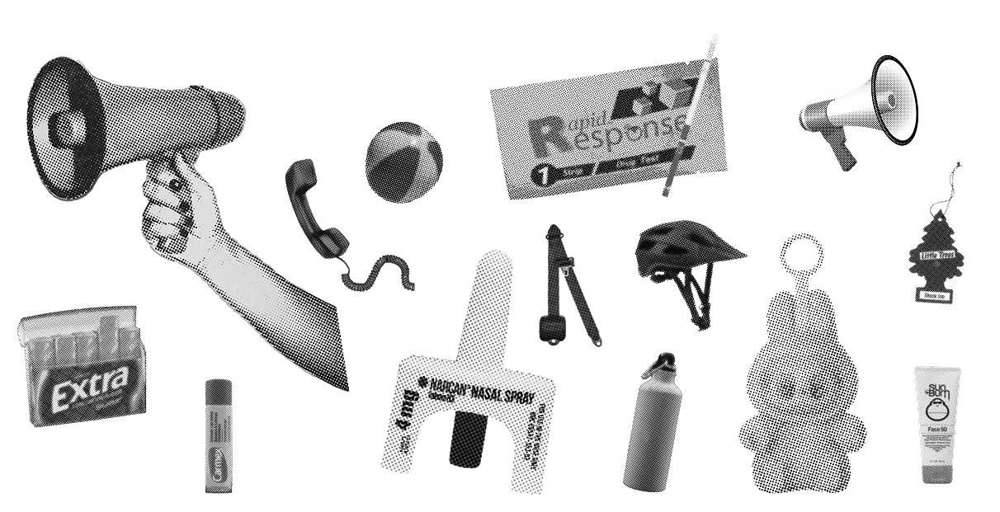
Iterative Prototyping and User Testing
The prototyping phase transformed conceptual ideas into tangible, interactive experiences. Drawing inspiration from the pegboard displays observed during a visit to the Franklin Institute, the team developed high-fidelity prototypes that emulated a museum-quality exhibit with interactive functionality. The design team created multiple components in parallel: the physical booth structure, a digital interactive game, and a website. User testing played a critical role throughout the development process, informing iterative refinements to the booth layout, digital interactions, and information presentation.

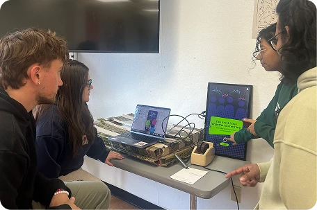
Environmental Design
The branding team designed the physical booth using pegboards, foam core, and acrylic signage to create an immersive, walkable space where visitors could learn about harm reduction. The goal was to create something that could function as an interactive installation. To add depth and visual interest, the team collaborated with industrial designers to create custom 3D-printed pegboard pegs, allowing each information panel to be layered more dynamically. The signage incorporated the pop-art visual system with bright, bold colors and graphic energy, making complex information easily digestible.
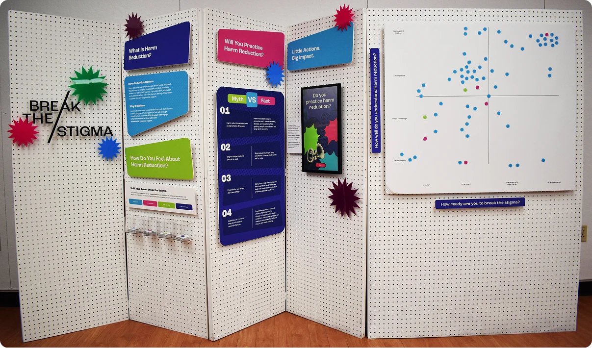
Interactive Data Collection
A key interactive element was integrated into the booth experience. On the first panel, visitors selected a color-coded sticker corresponding to their initial feelings about harm reduction after a brief introduction. After walking through the booth and engaging with the educational content, they placed their sticker on a grid based on their updated perspective.
This interactive component served dual purposes: engaging visitors with the booth while collecting valuable data about the Jefferson community's attitudes toward harm reduction. Results from 70 participants showed that 90% supported harm reduction and 66% could understand or explain harm reduction to others after the experience. When asked "how ready are you to break the stigma?," an overwhelming majority responded positively, indicating they were on board, empowered to make change, or had already started.
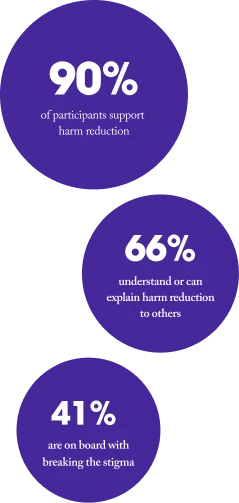
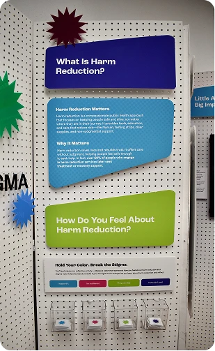
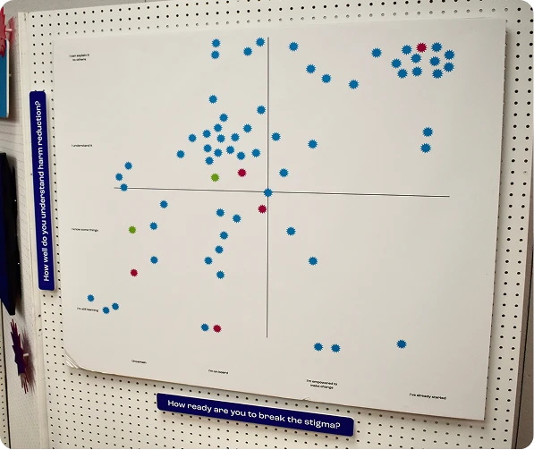
Merchandise & Promotional Materials
The team designed a range of branded merchandise and free promotional materials to extend the impact of the pop-up beyond the physical booth experience. To increase visibility and encourage ongoing conversation about harm reduction, the team created branded stickers, buttons, chapstick, and tote bags. Each item was carefully designed to align with the pop-punk visual identity while serving a functional purpose in harm reduction education and advocacy.
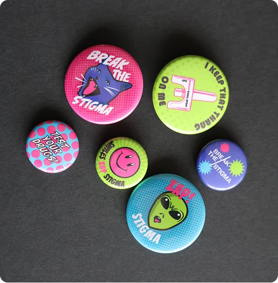
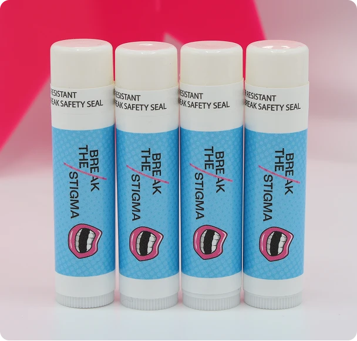
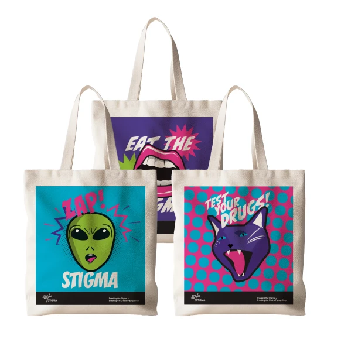
Harm Reduction Kits
The branded harm reduction kit was the centerpiece of the merchandise strategy, containing drug testing strips, Narcan (naloxone), and information cards with administration instructions. Inspired by The Everywhere Project, the kits were designed to be community-based and actionable, providing visitors with immediate, practical resources for safer drug use.
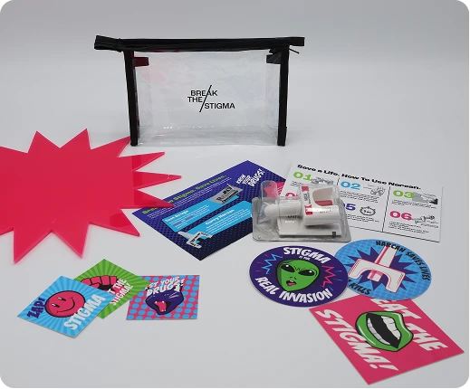
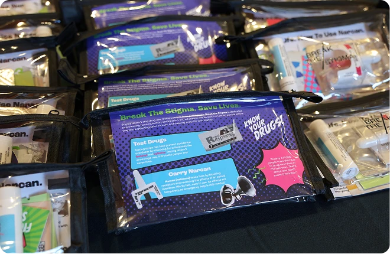
Social Media Campaign
The social media campaign was designed to build awareness and engagement around the pop-up shop while educating the Jefferson community about harm reduction principles. The strategy combined promotional content, educational posts, and community-centered storytelling to reach a Gen Z audience where they spend their time.

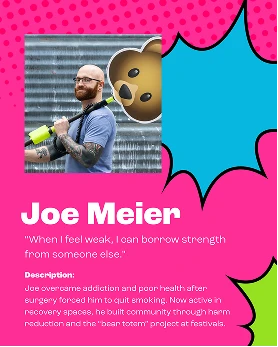


Website
The website served as a central digital hub, extending the educational experience beyond the physical booth. It was designed to be approachable, informative, and action-oriented. The homepage introduces harm reduction in clear, friendly language, using the pop-punk visual identity to establish a welcoming tone for a Gen Z audience. A dedicated section presents core harm reduction principles through digestible infographics and data visualizations, highlighting the evidence-based effectiveness of harm reduction approaches. The website features authentic stories from people with lived experience. These narratives humanize the issue and challenge stigma. An interactive component invites community members to contribute their own experiences, creating an ongoing dialogue around harm reduction and recovery. In addition, the site provides curated lists of harm reduction organizations for donations and support.
Interactive Game
The digital team developed an interactive game using Protopie to challenge assumptions about harm reduction by showing players they already practice it in daily life. Players are prompted to choose an activity (beach, party, driving, biking) and select up to three items to bring. Each scenario includes harm reduction items, fun extras, and the possibility of forgetting something critical. Forgetting harm reduction items triggers direct feedback reflecting real consequences. When players successfully choose the right items, they're met with affirmation followed by educational explanations that connect their choices to broader harm reduction principles. By pairing harm reduction items with universally accepted safety practices like seatbelts, the game normalizes stigmatized behaviors. The interactive format encourages reflection without lecturing, meeting people where they are and reinforcing that harm reduction is everywhere.
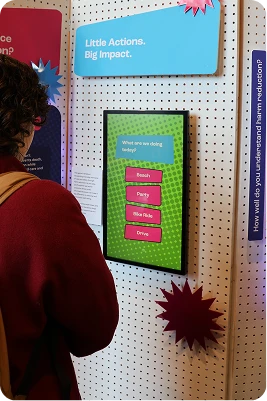
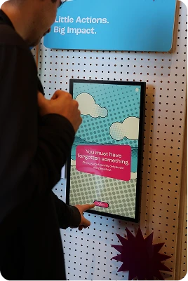
Reflection and Impact
The pop-up booth successfully achieved what we set out to do: spark curiosity and increase engagement across the Jefferson community. While the booth provided an effective initial spark, the real engagement came through genuine conversations with fellow students. The responses we received validated our approach. Students reported deepened empathy and a shift toward lowering judgment and offering help rather than abandonment. Ultimately, this project fostered meaningful dialogue, challenged assumptions, and provided practical resources that can save lives. By meeting students where they are and normalizing harm reduction as something we all already practice, we created a foundation for ongoing conversation and support around this critical public health issue.